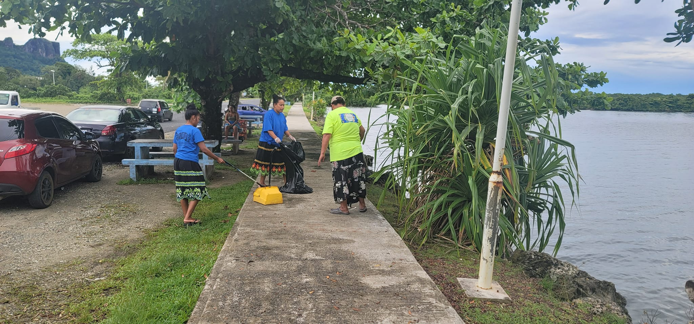

Preserving Nan Madol
Preservation efforts are essential to protecting Nan Madol’s ruins from natural erosion, rising sea levels, and vegetation overgrowth. Local leaders, researchers, and international organizations continue to collaborate to ensure this cultural heritage site endures for future generations.
- UNESCO World Heritage protection since 2016
- Community-based clean-up and education programs
- Ongoing research on sustainable tourism management

Major Preservation Challenges
| Threat | Primary Cause | Impact on the Site |
|---|---|---|
| Sea Level Rise | Climate Change | Flooding of stone foundations and canals |
| Vegetation Growth | Tropical climate and rainfall | Structural damage and root penetration |
| Tourism Pressure | Increased visitor activity | Erosion of walkways and wall surfaces |
| Weathering | Saltwater exposure and storms | Gradual weakening of basalt stone |